Getting started
Install the firmware, learn the four moves, set up Wi-Fi if you want it, and take a quick tour.
1. Install
- Use a computer with Chrome or Edge.
- The first time only: hold the BOOT button on the board while you plug it into the computer with a USB-C data cable, then let go. (The factory demo doesn't open its USB port by itself.)
- On the home page, click Install on your desk buddy and pick the port that appears (often "USB JTAG/serial debug unit").
- On a first install, choose to erase the device. It takes a minute or two, then the desk buddy restarts on its Home screen.
No port shows up? Try another cable (some only charge), plug straight into the computer rather than a hub or monitor, and hold BOOT while plugging in.
2. The four moves
| Move | What it does |
|---|---|
| Turn the knob | Moves the highlight in a list, or changes the value you're setting. |
| Press the knob | Chooses or confirms the highlighted thing. |
| Swipe left or right | Goes to the next or previous panel. |
| Tap | Acts on whatever you touched, right away. |
Hold the knob (or a still finger) for a moment to go back a screen. Hold for 3 seconds to jump to Home from anywhere. Lists also scroll with a drag or a flick, and dials take a tap or drag on their ring.
Fast travel
Pull down from the top edge to see every panel in one row. Keep your finger down and slide or flick sideways, then let go on the one you want. The sun button at the top opens Brightness.
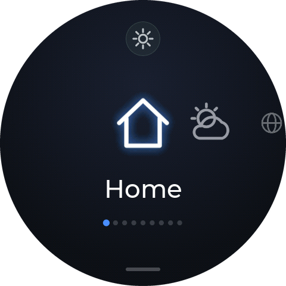
3. Home
Home shows the time and date, today's weather, and a few glance stats (habits done, the next countdown, a running timer). Tap a stat, or turn to it and press, to jump to its panel.
Change the face
Swipe up from the bottom edge of Home. Swipe or turn through the faces, and tap the toggles to choose which elements show. Tap the middle preview, or press, to close.
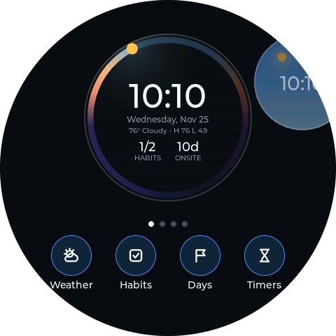

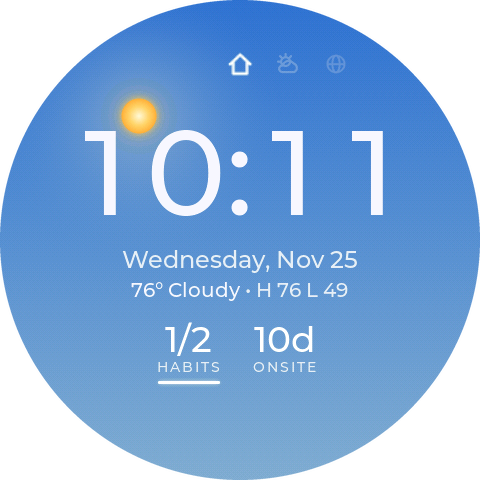
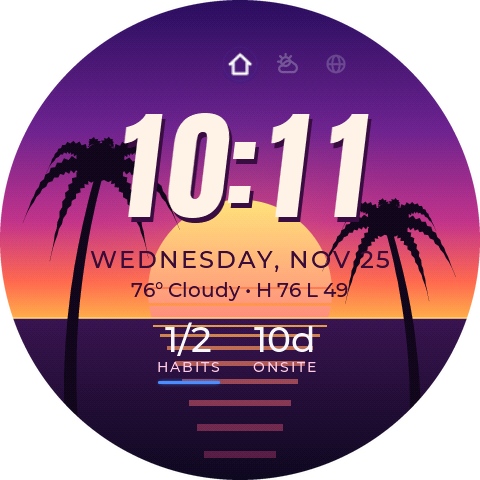
4. Wi-Fi (optional)
Wi-Fi gives you network time and the weather. Everything else works without it.
- Go to Settings > Wi-Fi. The desk buddy starts its own network.
- On your phone, join the DeskBuddy-XXXX network it shows. A setup page opens by itself.
- Pick your Wi-Fi, enter its password, and type your city for the weather. Save.
Only 2.4 GHz networks work. Without Wi-Fi, set the time in Settings > Date & time.
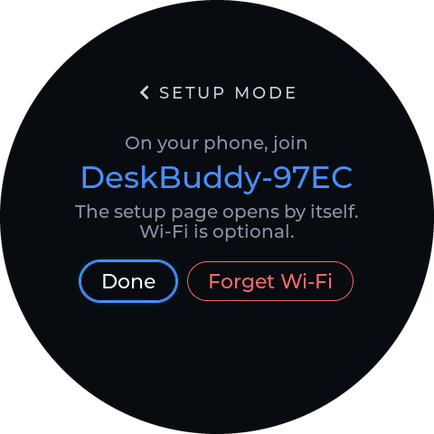
5. The panels
Swipe between them, or use fast travel. You can hide and reorder panels in Settings > Panels.
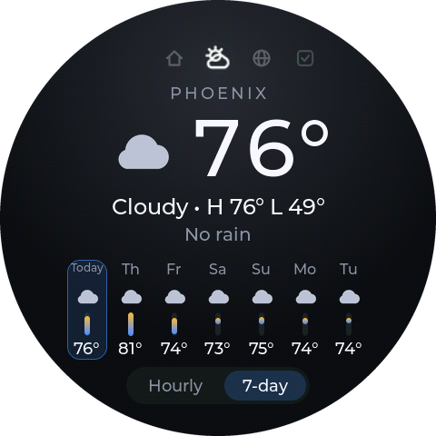
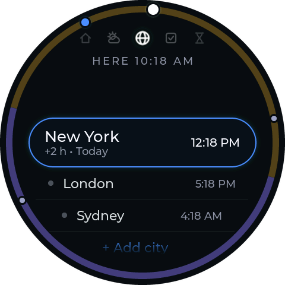
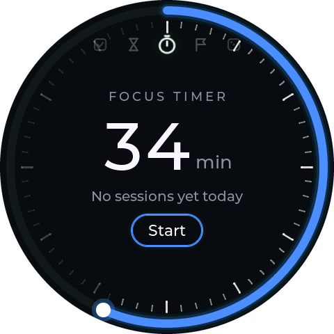
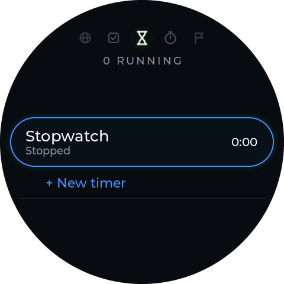
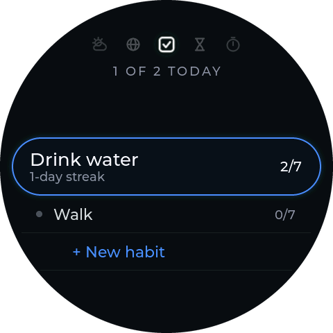
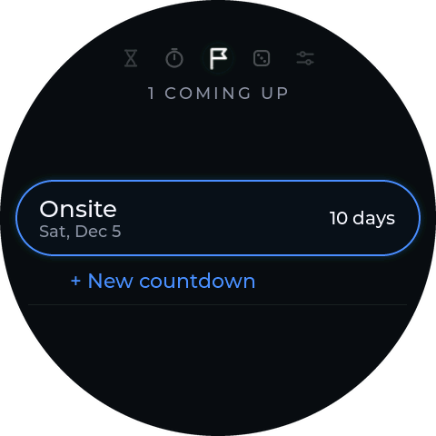
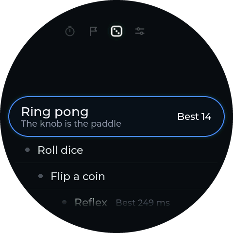
Breathe guides slow breathing: turn to pick a pattern, press to start.
6. Settings worth a look
- Brightness and Auto brightness: follows the sun and dims toward your bedtime.
- Sound: volume, knob clicks, and the sound for each event (needs the optional buzzer).
- Stand-up, water and eye-break reminders, and the hours they run.
- Time zone and Time format.
- Return to Home after a few idle minutes.
- Panels: show, hide and reorder.
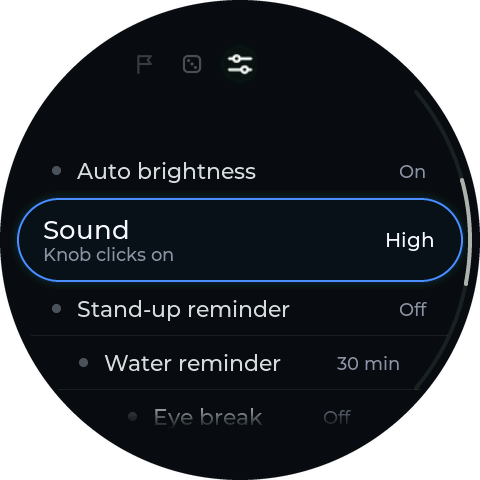
7. Sounds
With a KY-006 passive buzzer fitted, the desk buddy clicks softly as you turn and press, chimes when a timer ends, and plays a little melody when it starts. In Settings > Sound, set the volume, turn knob clicks off, or open Sounds to pick the sound for any event from the whole library. You hear each one as you turn to it.
On a computer, the sound lab lists the same events. Connect the desk buddy by USB to hear sounds on it, make your own, and send them over.
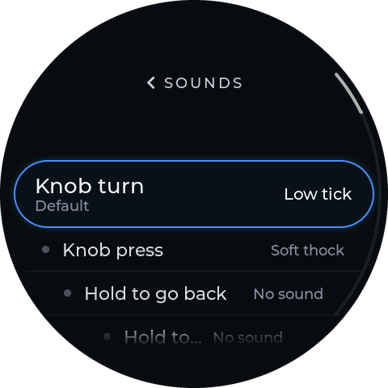
8. Updating
Come back to the home page and click Install again. Don't erase the device when it asks: your settings, habits, countdowns and Wi-Fi stay.